The Kolmogorov-Smirnov Test¶
A visit to a data and statistical technique useful to software engineers. We learn about some Rust too along the way.
The code and examples here are available on Github. The Rust library is on crates.io.
Kolmogorov-Smirnov Hypothesis Testing¶
The Kolmogorov-Smirnov test is a hypothesis test procedure for determining if two samples of data are from the same distribution. The test is non-parametric and entirely agnostic to what this distribution actually is. The fact that we never have to know the distribution the samples come from is incredibly useful, especially in software and operations where the distributions are hard to express and difficult to calculate with.
It is really surprising that such a useful test exists. This is an unkind Universe, we should be completely on our own.
The test description may look a bit hard in the outline below but skip ahead to the implementation because the Kolmogorov-Smirnov test is incredibly easy in practice.
The Kolmogorov-Smirnov test is covered in Numerical Recipes. There is a pdf available from the third edition of Numerical Recipes in C.
The Wikipedia article is a useful overview but light about proof details. If you are interested in why the test statistic has a distribution that is independent and useful for constructing the test then these MIT lecture notes give a sketch overview.
See this introductory talk by Toufic Boubez at Monitorama for an application of the Kolmogorov-Smirnov test to metrics and monitoring in software operations. The slides are available on slideshare.
The Test Statistic¶
The Kolmogorov-Smirnov test is constructed as a statistical hypothesis test. We determine a null hypothesis, 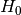, that the two samples we are testing come from the same distribution. Then we search for evidence that this hypothesis should be rejected and express this in terms of a probability. If the likelihood of the samples being from different distributions exceeds a confidence level we demand the original hypothesis is rejected in favour of the hypothesis, 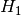, that the two samples are from different distributions.
To do this we devise a single number calculated from the samples, i.e. a statistic. The trick is to find a statistic which has a range of values that do not depend on things we do not know. Like the actual underlying distributions in this case.
The test statistic in the Kolmogorov-Smirnov test is very easy, it is just the maximum vertical distance between the empirical cumulative distribution functions of the two samples. The empirical cumulative distribution of a sample is the proportion of the sample values that are less than or equal to a given value.
For instance, in this plot of the empirical cumulative distribution functions of normally distributed data, 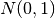 and 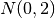 samples, the maximum vertical distance between the lines is at about -1.5 and 1.5.

The vertical distance is a lot clearer for an sample against 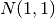. The maximum vertical distance occurs somewhere around zero and is quite large, maybe about 0.35 in size. This is significant evidence that the two samples are from different distributions.
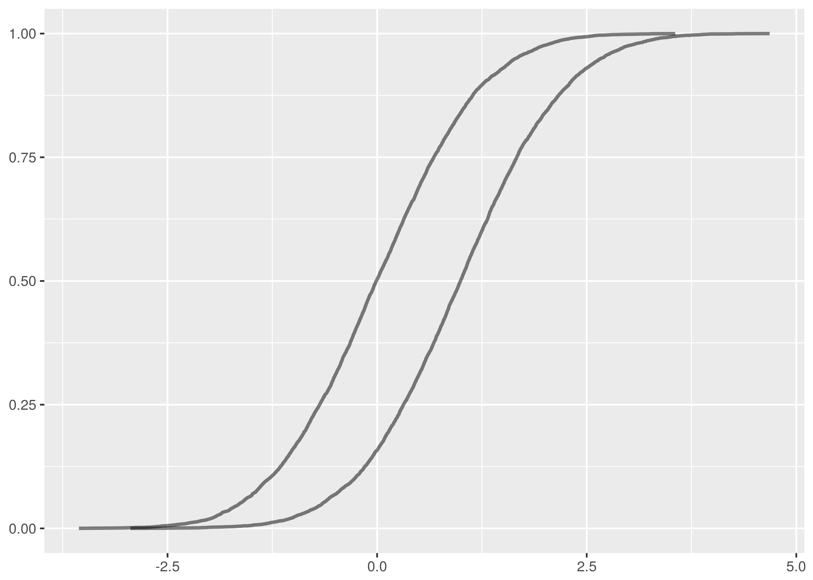As an aside, these examples demonstrate an important note about the application of the Kolmogorov-Smirnov test. It is much better at detecting distributional differences when the sample medians are far apart than it is at detecting when the tails are different but the main mass of the distributions is around the same values.
So, more formally, suppose  are n independent and identically
distributed observations of a continuous value. The empirical cumulative
distribution function,
are n independent and identically
distributed observations of a continuous value. The empirical cumulative
distribution function,  , is:
, is:
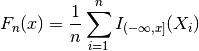
Where  is the indicator function which is 1 if is less than
or equal to
is the indicator function which is 1 if is less than
or equal to  and 0 otherwise.
and 0 otherwise.
This just says that 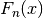 is the number of samples observed that are
less than or equal to divided by the total number of samples. But it
says it in a complicated way so we can feel clever about ourselves.
The empirical cumulative distribution function is an unbiased estimator for the underlying cumulative distribution function, incidentally.
For two samples having empirical cumulative distribution functions
and 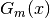, the Kolmogorov-Smirnov test statistic,
 , is the maximum absolute difference between and
for the same , i.e. the largest vertical distance
between the plots in the graph.
, is the maximum absolute difference between and
for the same , i.e. the largest vertical distance
between the plots in the graph.
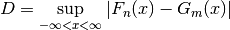
The Glivenko–Cantelli theorem says if the is made from samples from the same distribution as then this statistic “almost surely converges to zero in the limit when n goes to infinity.” This is an extremely technical statement that we are simply going to ignore.
Two Sample Test¶
Surprisingly, the distribution of can be approximated well in the case
that the samples are drawn from the same distribution. This means we can build
a statistic test that rejects this null hypothesis for a given confidence level
if exceeds an easily calculable value.
Tables of critical values are available, for instance the SOEST tables describe a test implementation for samples of more than twelve where we reject the null hypothesis, i.e. decide that the samples are from different distributions, if:
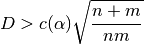
Where n and m are the sample sizes. A 95% confidence level corresponds to 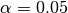 for which 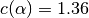.
Alternatively, Numerical Recipes describes a direct calculation that works well for:
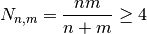
i.e. for samples of more than seven since 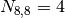.
Numerical Recipes continues by claiming the probability that the test statistic is greater than the value observed is approximately:
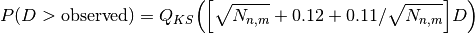
With 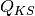 defined as:
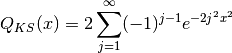
This can be computed by summing terms until a convergence criterion is achieved. The implementation in Numerical Recipes gives this a hundred terms to converge before failing.
The difference between the two approximations is marginal. The Numerical Recipes approach produces slightly smaller critical values for rejecting the null hypothesis as can be seen in the following plot of critical values for the 95% confidence level where one of the samples has size 256. The x axis varies over the other sample size, the y axis being the critical value.
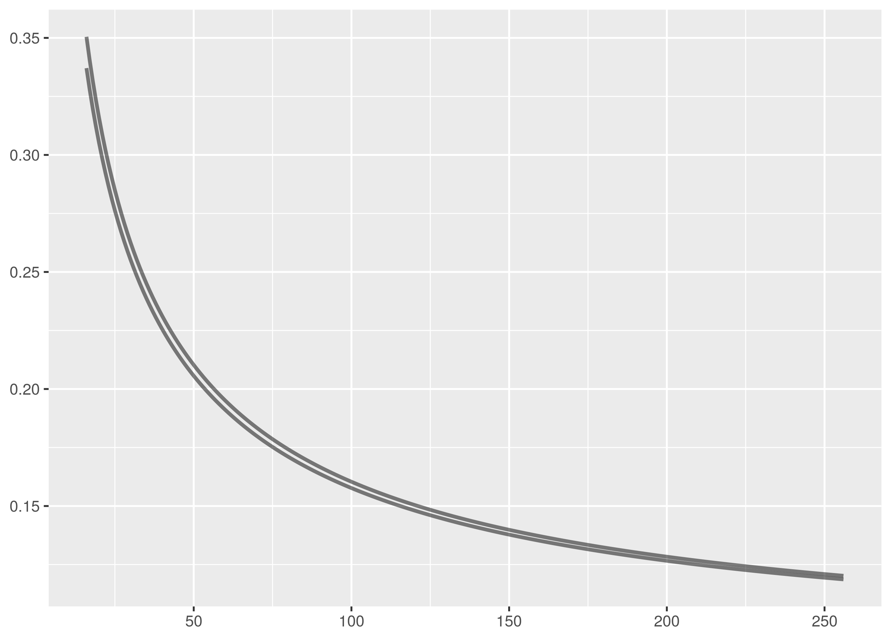The SOEST tables are an excellent simplifying approximation.
Discussion¶
A straightforward implementation of this test can be found in the Github repository. Calculating the test statistic using the empirical cumulative distribution functions is probably as complicated as it gets for this. There are two versions of the test statistic calculation in the code, the simpler version being used to probabilistically verify the more efficient implementation.
Non-parametricity and generality are the great advantages of the Kolmogorov-Smirnov test but these are balanced by drawbacks in ability to establish sufficient evidence to reject the null hypothesis.
In particular, the Kolmogorov-Smirnov test is weak in cases when the sample
empirical cumulative distribution functions do not deviate strongly even though
the samples are from different distributions. For instance, the
Kolmogorov-Smirnov test is most sensitive to discrepency near the median of the
samples because this is where differences in the graph are most likely to be
large. It is less strong near the tails because the cumulative distribution
functions will both be near 0 or 1 and the difference between them less
pronounced. Location and shape related scenarios that constrain the
test statistic reduce the ability of the Kolmogorov-Smirnov test to correctly
reject the null hypothesis.
The Chi-squared test is also used for testing whether samples are from the same distribution but this is done with a binning discretization of the data. The Kolmogorov-Smirnov test does not require this.
A Field Manual for Rust¶
Rust is a Mozilla sponsored project to create a safe, fast systems language. There is an entire free O’Reilly book on why create this new language but the reasons include:
- Robust memory management. It is impossible to deference null or dangling pointers in Rust.
- Improved security, reducing the incidence of flaws like buffer overflow exploits.
- A light runtime with no garbage collection and overhead means Rust is ideal to embed in other languages and platforms like Ruby, Python, and Node.
- Rust has many modern language features unavailable in other systems languages.
Rust is a serious language, capable of very serious projects. The current flagship Rust project, for instance, is Servo, a browser engine under open source development with contributions from Mozilla and Samsung.
The best introduction to Rust is the Rust Book. Newcomers should also read Steve Klabnik’s alternative introduction to Rust for the upfront no-nonsense dive into memory ownership, the crux concept for Rust beginners.
Those in a hurry can quickstart with these slide decks by:
Two must-read learning resources are 24 Days of Rust, a charming tour around the libraries and world of Rust, and ArcadeRS, a tutorial in Rust about writing video games.
And finally, if Servo has you interested in writing a browser engine in Rust, then Let’s build a browser engine! is the series for you. It walks through creating a simple HTML rendering engine in Rust.
Moral Support for Learning the Memory Rules¶
The Road to Rust is not royal, there is no pretending otherwise. The Rust memory rules about lifetime, ownership, and borrowing are especially hard to learn.
It probably doesn’t much feel like it but Rust is really trying to help us with these rules. And to be fair to Rust, it hasn’t segfaulted me so far.
But that is no comfort when the compiler won’t build your code and you can’t figure out why. The best advice is probably to read as much about the Rust memory rules as you can and to keep reading about them over and over until they start to make some sense. Don’t worry, everybody finds it difficult at first.
Although adherence to the rules provides the compiler with invariant guarantees that can be used to construct proofs of memory safety, the rationale for these rules is largely unimportant. What is necessary is to find a way to work with them so your programs compile.
Remember too that learning to manage memory safely in C/C++ is much harder than learning Rust and there is no compiler checking up on you in C/C++ to make sure your memory management is correct.
Keep at it. It takes a long time but it does become clearer!
Niche Observations¶
This section is a scattering of Rust arcana that caught my attention. Nothing here that doesn’t interest you is worth troubling too much with and you should skip on past.
Travis CI has excellent support for building Rust projects, including with
the beta and nightly versions. It is simple to set up by configuring a
travis.yml according to the
Travis Rust documentation.
See the Travis CI build for this project for an example.
Rust has a formatter in rustfmt and a lint in rust-clippy. The formatter
is a simple install using cargo install and provides a binary command. The
lint requires more integration into your project, and currently also needs the
nightly version of Rust for plugin support. Both projects are great for helping
Rust newcomers.
Foreign Function Interface is an area where Rust excels. The absence of a large runtime means Rust is great for embedding in other languages and it has a wide range as a C replacement in writing modules for Python, Ruby, Node, etc. The Rust Book introduction demonstrates how easy it is call Rust from other languages. Day 23 of Rust and the Rust FFI Omnibus are additional resources for Rust FFI.
Rust is being used experimentally for embedded development. Zinc is work on building a realtime ARM operating system using Rust primarily, and the following are posts about building software for embedded devices directly using Rust.
Relatedly, Rust on Raspberry Pi is a guide to cross-compiling Rust code for the Raspberry Pi.
Rust treats the code snippets in your project documentation as tests and makes a point of compiling them. This helps keep documentation in sync with code but it is a shock the first time you get a compiler error for a documentation code snippet and it takes you ages to realise what is happening.
Kolmogorov-Smirnov Library¶
The Kolmogorov-Smirnov test implementation is available as a Cargo
crate, so it is simple to
incorporate into your programs. Add the dependency to your Cargo.toml file.
[dependencies]
kolmogorov_smirnov = "1.1.0"
Then to use the test, call the kolmogorov_smirnov::test function with the
two samples to compare and the desired confidence level.
extern crate kolmogorov_smirnov as ks;
let xs = vec!(0, 1, 2, 3, 4, 5, 6, 7, 8, 9, 10, 11, 12);
let ys = vec!(12, 11, 10, 9, 8, 7, 6, 5, 4, 3, 2, 1, 0);
let confidence = 0.95;
let result = ks::test(&xs, &ys, confidence);
if !result.is_rejected {
// Woot! Samples are from the same distribution with 95% confidence.
}
The Kolmogorov-Smirnov test as implemented works for any data with a Clone
and an Ord trait implementation in Rust. So it is possible, but pretty
useless, to test samples of characters, strings and lists. In truth, the
Kolmogorov-Smirnov test requires the samples to be taken from a continuous
distribution, so discrete data like characters and strings are cute to consider
but invalid test data.
Still being strict, this test condition also does not hold for integer data unless some hands are waved about the integer data being embedded into real numbers and a distribution cooked up from the probability weights. We make some compromises and allowances.
If you have floating point or integer data to test, you can use the included
test runner binaries, ks_f64 and ks_i32. These operate on single-column
headerless data files and test two commandline argument filenames against each
other at 95% confidence.
$ cargo run -q --bin ks_f64 dat/normal_0_1.tsv dat/normal_0_1.1.tsv
Samples are from the same distribution.
test statistic = 0.0399169921875
critical value = 0.08550809323787689
reject probability = 0.18365715210599798
$ cargo run -q --bin ks_f64 dat/normal_0_1.tsv dat/normal_1_1.1.tsv
Samples are from different distribution.
test statistic = 0.361572265625
critical value = 0.08550809323787689
reject probability = 1
Testing floating point numbers is a headache because Rust floating point types
(correctly) do not implement the Ord trait, only the PartialOrd trait.
This is because things like NaN are not comparable and the order cannot be
total over all values in the datatype.
The test runner for floating point types is implemented using a wrapper type that implements a total order, crashing on unorderable elements. This suffices in practice since the unorderable elements will break the test anyway.
The implementation uses the Numerical Recipes approximation for rejection probabilities rather than the almost as accurate SOEST table approximation for critical values. This allows the additional reporting of the reject probability which isn’t available using the SOEST approach.
Datasets¶
Statistical tests are more fun if you have datasets to run them over.
N(0,1)¶
Because it is traditional and because it is easy and flexible, start with some normally distributed data.
Rust can generate normal data using the rand::distributions module. If
mean and variance are f64 values representing the mean and variance
of the desired normal deviate, then the following code generates the deviate.
Note that the Normal::new call requires the mean and standard deviation as
parameters, so it is necessary to take the square root of the variance to
provide the standard deviation value.
extern crate rand;
use rand::distributions::{Normal, IndependentSample};
let mean: f64 = ...
let variance: f64 = ...
let mut rng = rand::thread_rng();
let normal = Normal::new(mean, variance.sqrt());
let x = normal.ind_sample(&mut rng);
The kolmogorov_smirnov library includes a binary for generating sequences of
independently distributed Normal deviates. It has the following usage.
cargo run --bin normal <num_deviates> <mean> <variance>
The -q option is useful too for suppressing cargo build messages in the
output.
Sequences from , , and are
included in the
Github repository.
is included mainly just to troll, calculating  and drawing attention to the limitations of the floating point representation of
irrational numbers.
and drawing attention to the limitations of the floating point representation of
irrational numbers.
cargo run -q --bin normal 8192 0 1 > normal_0_1.tsv
cargo run -q --bin normal 8192 0 2 > normal_0_2.tsv
cargo run -q --bin normal 8192 1 1 > normal_1_1.tsv
These are not the most beautiful of Normal curves, but you must take what you get. The data is lumpy and not single peaked.
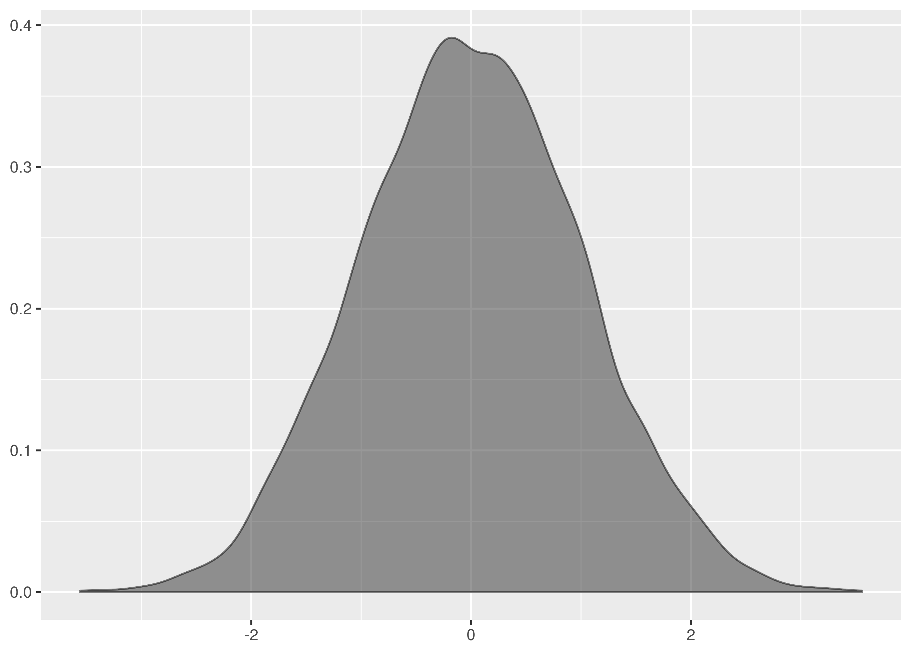is similar, though less of a disaster near the mean.

by contrast looks surprisingly like the normal data diagrams in textbooks.

The following is a plot of all three datasets to illustrate the relative widths, heights and supports.

Results¶
The Kolmogorov-Smirnov test is successful at establishing the datasets are all from the same distribution in all combinations of the test.
$ cargo run -q --bin ks_f64 dat/normal_0_1.tsv dat/normal_0_1.1.tsv
Samples are from the same distribution.
test statistic = 0.0399169921875
critical value = 0.08550809323787689
reject probability = 0.18365715210599798
$ cargo run -q --bin ks_f64 dat/normal_0_1.tsv dat/normal_0_1.2.tsv
Samples are from the same distribution.
test statistic = 0.0595703125
critical value = 0.08550809323787689
reject probability = 0.6677483327196572
...
Save yourself the trouble in reproduction by running this instead:
for I in dat/normal_0_1.*
do
for J in dat/normal_0_1.*
do
if [[ "$I" < "$J" ]]
then
echo $I $J
cargo run -q --bin ks_f64 $I $J
echo
echo
fi
done
done
The datasets also correctly accept the null hypothesis in all combinations of dataset inputs when tested against each other.
However, successfully passes for all combinations but that
between dat/normal_0_2.tsv and dat/normal_0_2.1.tsv where it fails as a
false negative.
$ cargo run -q --bin ks_f64 dat/normal_0_2.1.tsv dat/normal_0_2.tsv
Samples are from different distributions.
test statistic = 0.102783203125
critical value = 0.08550809323787689
reject probability = 0.9903113063475989
This failure is a demonstration of how the Kolmogorov-Smirnov test is sensitive
to location because here the mean of the dat/normal_0_2.1.tsv is shifted
quite far from the origin.
This is the density.
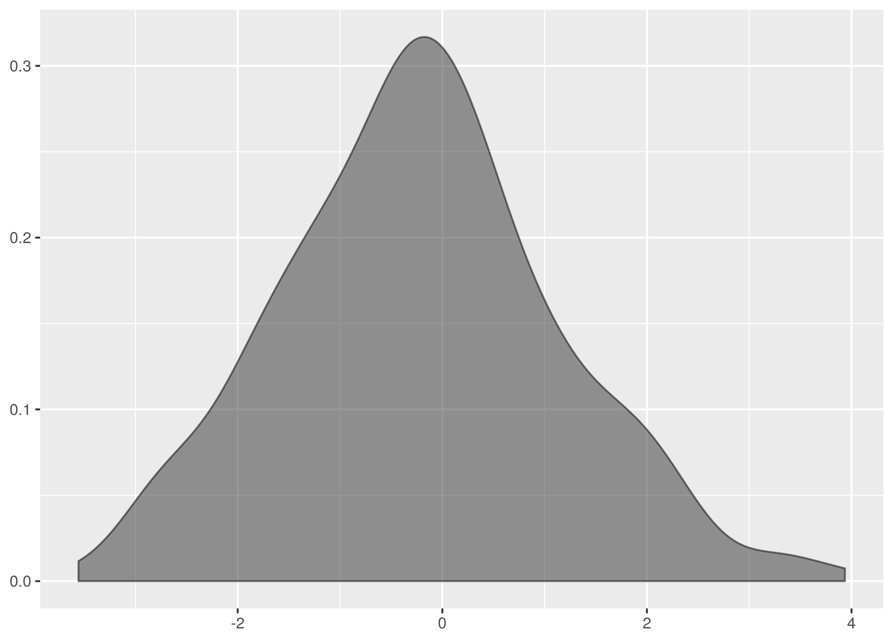And superimposed with the density from dat/normal_0_2.tsv.

The data for dat/normal_0_2.1.tsv is the taller density in this graph.
Notice, in particular, that the mean is shifted left a lot in comparison with
dat/normal_0_2.tsv. See also the chunks of non-overlapping weight on the
left and right hand slopes.
The difference in means is confirmed by calculation. The dataset for
dat/normal_0_2.tsv has mean 0.001973723, whereas the dataset for
dat/normal_0_2.1.tsv has mean -0.2145779. By comparison, the other
datasets tests have means -0.1308625, -0.08537648, and
-0.01374325.
Looking at the empirical cumulative density functions of the false negative comparison, we see a significant gap between the curves starting near 0.
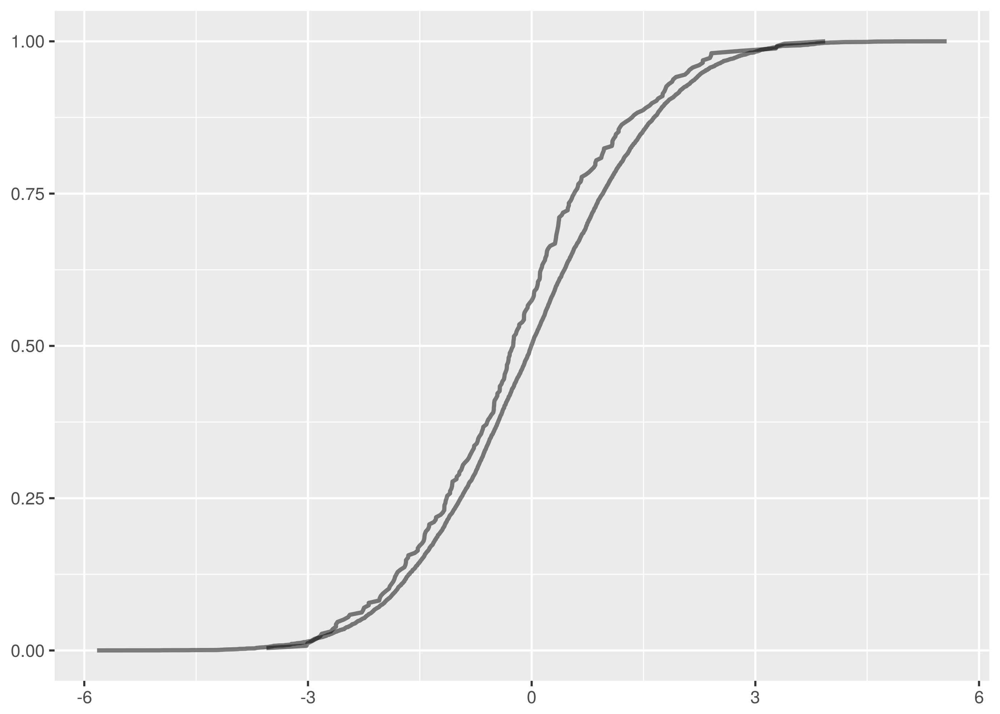For comparison, here are the overlaid empirical cumulative density functions for the other tests.
 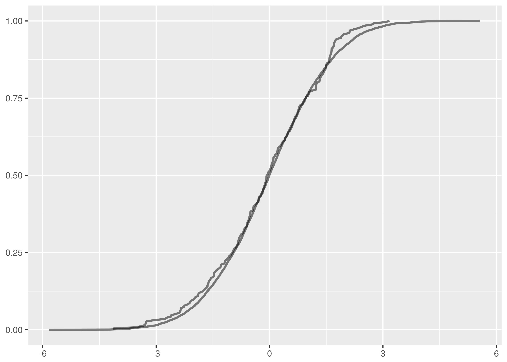
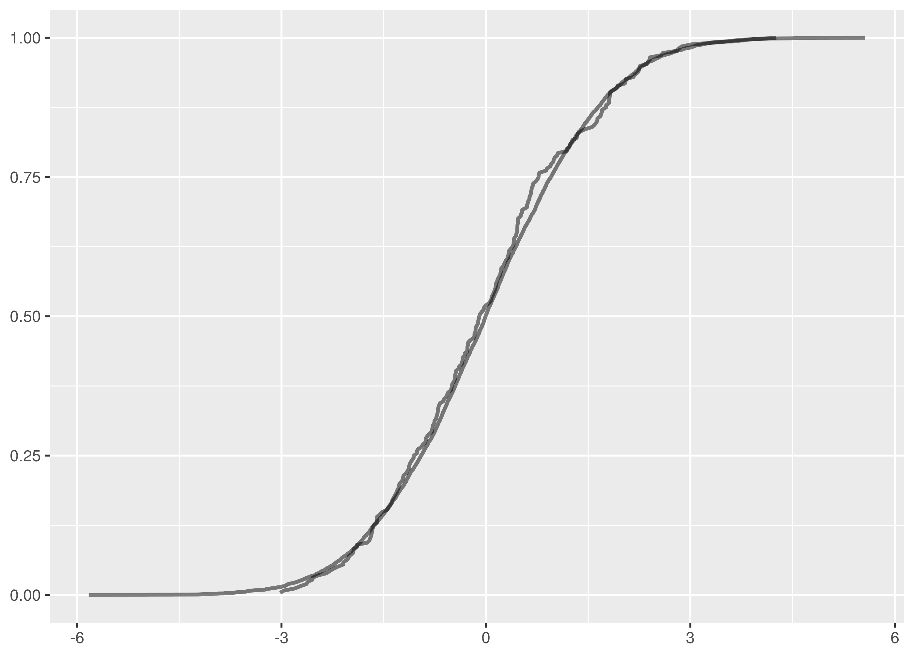
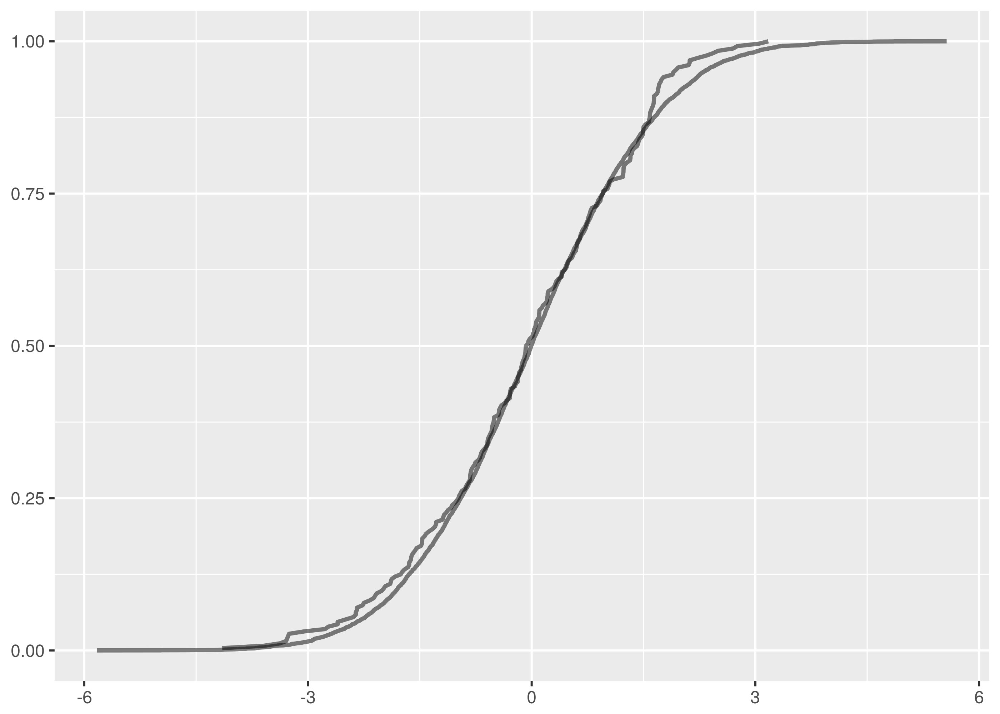
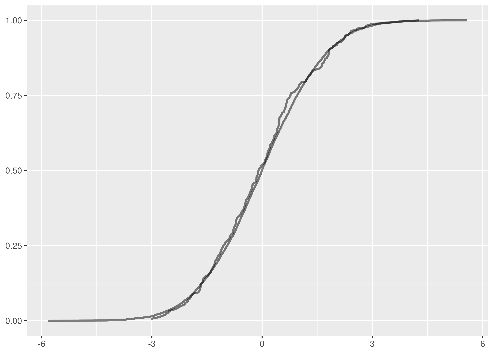
One false negative in thirty unique test pairs at 95% confidence is on the successful side of expectations.
Turning instead to tests that should be expected to fail, the following block runs comparisons between datasets from different distributions.
for I in dat/normal_0_1.*
do
for J in dat/normal_0_2.*
do
echo $I $J
cargo run -q --bin ks_f64 $I $J
echo
echo
done
done
The against and against tests correctly reject the null hypothesis in every variation. These tests are easy failures because they are large location changes, illustrating again how the Kolmogorov-Smirnov test is sensitive to changes in centrally located weight.
However, there are ten false positives in the comparisons between datasets from and .
dat/normal_0_1.2.tsv is reported incorrectly as being from the same
distribution as the following datasets.
dat/normal_0_2.tsvat 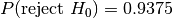,dat/normal_0_2.2.tsvat 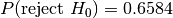,dat/normal_0_2.3.tsvat 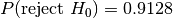,dat/normal_0_2.4.tsvat 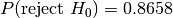.
Similarly, dat/normal_0_1.3.tsv is a false positive against:
dat/normal_0_2.3.tsvat ,dat/normal_0_2.4.tsvat .
And dat/normal_0_1.4.tsv is a false positive against:
dat/normal_0_2.1.tsvat 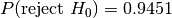,dat/normal_0_2.2.tsvat ,dat/normal_0_2.3.tsvat ,dat/normal_0_2.4.tsvat .
Note that many of these false positives have rejection probabilities that are high but fall short of the 95% confidence level required. The null hypothesis is that the distributions are the same and it is this that must be challenged at the 95% level.
Let’s examine the test where the rejection probability is lowest, that between
dat/normal_0_1.2.tsv and dat/normal_0_2.2.tsv.
$ cargo run -q --bin ks_f64 dat/normal_0_1.2.tsv dat/normal_0_2.2.tsv
Samples are from the same distribution.
test statistic = 0.08203125
critical value = 0.11867932230234146
reject probability = 0.6584658436106378
The overlaid density and empirical cumulative density functions show strong difference.
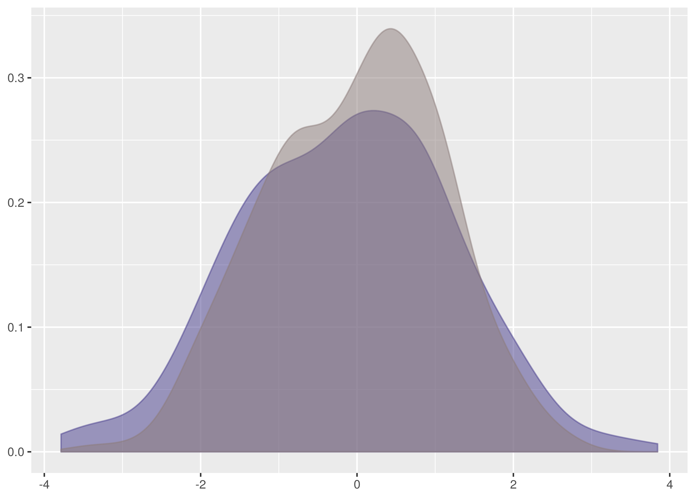
The problem, however, is a lack of samples combined with the weakness of the
Kolmogorov-Smirnov test in detecting differences in spread at the tails. Both of
these datasets have 256 samples and the critical value for 95% confidence is
0.1186. This is a large difference to demonstrate at the edges of the empirical
cumulative distribution functions and in the case of this test the
test statistic is a comfortable 0.082.
There is insufficient evidence to reject the null hypothesis.
Let’s also examine the false positive test where the rejection probability is
tied highest, between dat/normal_0_1.4.tsv and dat/normal_0_2.1.tsv.
$ cargo run -q --bin ks_f64 dat/normal_0_1.4.tsv dat/normal_0_2.1.tsv
Samples are from the same distribution.
test statistic = 0.1171875
critical value = 0.11867932230234146
reject probability = 0.9451734528250557

This is just incredibly borderline. There is a very strong difference on the left side but it falls fractionally short of the required confidence level. Note how this also illustrates the bias in favour of the null hypothesis that the two samples are from the same distribution.
Notice that of the false positives, only the one between
dat/normal_0_1.2.tsv and dat/normal_0_2.tsv happens with a dataset
containing more than 256 samples. In this test with 8192 samples against 256,
the critical value is 0.0855 and the test statistic scrapes by underneath at
0.08288.
In the case for two samples of size 8192, the critical value is a very discriminating 0.02118.
In total there are ten false positives in 75 tests, a poor showing.
The lesson is that false positives are more common and especially with small datasets. When using the Kolmogorov-Smirnov test in production systems, tend to use higher confidence levels when larger datasets cannot be available.
http://twitter.com Response Times¶
Less artificially, and more representative of metrics in software operations and monitoring, are datasets of HTTP server response times. Metrics which behave like response time are very typical and not easy to analyse with usual statistical technology.
Apache Bench is a commandline URL loadtesting tool that can be used to
collect sample datasets of HTTP request times. A dataset of service times for
http://twitter.com was collected using:
ab -n 8192 -c 1 -v 3 -g http.tsv http://twitter.com/
The test actually ships 3.36MB of redirect headers since http://twitter.com
is a 301 Moved Permanently redirect to https://twitter.com but the dataset
is still useful as it exhibits the behaviour of HTTP endpoint responses anyway.
The options in the call specify:
-c 1: Use test concurrency of one outstanding request to throttle the testing.-v 3: Log at high verbosity level to show individual request data.-g http.tsv: Output a TSV summary tohttp.tsv. The-gstands for Gnuplot which the output file is organised to support particularly.
A timeout or significant failure can trash the test completely, so it is more
robust to collect data in blocks of 256 requests and combine the results. This
was done in collect some supplementary data for comparison purposes and is
available as dat/http.1.tsv through dat/http.4.tsv in the
Github repository.
The primary dataset is dat/http.tsv.
for i in {1..32}
do
ab -n 256 -c 1 -v 3 -g http.$i.tsv http://twitter.com/
done
Aside: The trailing / in the target URL is required in the ab command or
it fails with an invalid URL error.
The result data file from Apache Bench has the following schema:
starttime: A human friendly time representation of the request start.seconds: The Unix epoch seconds timestamp ofstarttime. This is the number of regular, but not leap, seconds since 1 January 1970. Trivia Fact: this is why Unix timestamps line up, against sane expectations, on minute boundaries when divided by 60.ctime: Connection time to the server in milliseconds.dtime: Processing time on the server in milliseconds. Thedmay stand for “duration” or it may not.ttime: Total time in milliseconds,ctime + dtime.wait: Waiting time in milliseconds. This is not included inttime, it appears from the data.
If you want to use the generated data file as it was intended for processing with Gnuplot, then see this article.
The output data is sorted by Apache Bench according to ttime, meaning
shorter requests come first in the output. The purposes here better appreciate
data sorted by the seconds timestamp, particularly to plot the timeseries
data in the order the requests were issued.
And because nobody is much interested in when exactly this dataset was made, the
starttime and seconds fields are dropped from the final data. The
following crafty piece of Awk does
the header-retaining sort and column projection.
cat http.tsv |\
awk 'NR == 1; NR > 1 {print $0 | "sort"}' |\
cut -f3- \
> http.tsv.out
All the response time datasets in the Github repository have been processed like this.
To transform the headered multi-column data files into a format suitable for
input to ks_i64 use the following example as a guide:
tail -n +2 http.tsv |\
cut -f3 \
> http_ttime.tsv
Then to run the test:
cargo run -q --bin test_t64 dat/http_ttime.tsv dat/http_ttime.1.tsv
The timeseries plot shows a common Internet story of outliers, failure cases and disgrace.

The density is highly peaked but includes fast failure weight and a long light tail. This is not straightforward to parametrise with the common statistical distributions that are fruitful to work with and demonstrates the significant utility of the Kolmogorov-Smirnov test.

Note there is a much larger horizontal axis range in this graph. This has the effect of compressing the visual area under the graph relative to the earlier dataset density plots.
Don’t let this trick you. The y axis values are smaller than in the other graphs but there is far more horizontal axis support to compensate. The definition of a probability density means the area under the graph in all the density plots must sum to the same.
Results¶
Restricting attention to just the total time value, there are ten test dataset
combinations all of which are false negatives save for the comparison between
dat/http_ttime.1.tsv dat/http_ttime.4.tsv
for I in dat/http_ttime.*
do
for J in dat/http_ttime.*
do
if [[ "$I" < "$J" ]]
then
echo $I $J
cargo run -q --bin ks_f64 $I $J
echo
echo
fi
done
done
The only accepted test returned the following test information:
$ cargo run -q --bin ks_f64 dat/http_ttime.1.tsv dat/http_ttime.4.tsv
Samples are from the same distribution.
test statistic = 0.0703125
critical value = 0.11867932230234146
reject probability = 0.4633497077833878
Here is the timeseries and density plot for ttime in the
dat/http_ttime.1.tsv dataset for comparison to the dat/http_ttime.tsv
plots above.


There is some similarity to the observations in dat/http_ttime.tsv but there
is a far shorter tail here.
In fact, the datasets are all very different from each other. Here are the other density plots.
dat/http_ttime.2.tsv exhibits a spike of failures which are of short
duration and contribute large weight on the left of the graph.
By contrast dat/http_ttime.3.tsv has no fast failures or slow outliners and
the weight is packed around .9s to 1s.
dat/http_ttime.4.tsv has a long tail for an outlier, likely to be request
timeouts.

By inspection of the empirical cumulative density functions, the only test with
a possible chance of accepting the null hypothesis was that between
dat/http_ttime.tsv and dat/http_ttime.4.tsv. This is the comparison with
the smallest test statistic from the rejected cases.
$ cargo run -q --bin ks_f64 dat/http_ttime.4.tsv dat/http_ttime.tsv
Samples are from different distributions.
test statistic = 0.1368408203125
critical value = 0.08550809323787689
reject probability = 0.9998422018223175
Even still, this is not a close match. The empirical cumulative density function plots show very different profiles on the error request times to the left of the diagram.

As for the passing match, it turns out that dat/http_ttime.1.tsv and
dat/http_ttime.4.tsv are indeed quite similar. This would be more apparent
but for the outlier in dat/http_ttime.4.tsv. Given that the
Kolmogorov-Smirnov test is not sensitive at the tails, this does not contribute
evidence to reject the null hypothesis.

In conclusion, the captured HTTP response time datasets exhibit features which make them likely to actually be from different distributions, some with and without long outliers, fast errors.
Twitter, Inc. Stock Price¶
The final dataset is a historical stock market sample. Collect a fortnight of minute granularity stock price data from Google Finance using:
wget -O twtr.dat 'http://www.google.com/finance/getprices?i=60&p=14d&f=d,c,h,l,o,v&q=TWTR'
The HTTP parameters in the call specify:
i=60: This is the sample interval in seconds, i.e. get per-minute data. The minimum sample interval available is sixty seconds.p=14d: Return data for the previous fourteen days.f=d,c,h,l,o,v: Include columns in the result for sample interval start date, closing price, high price value, low price value, opening price, and trade count, i.e. volume.q=TWTR: Query data for the TWTR stock symbol.
The response includes a header block before listing the sample data which looks like the following:
a1448289000,26.11,26.11,26.11,26.11,500
1,26.17,26.17,26.12,26.13,700
2,26.25,26.25,26.14,26.14,191266
3,26.14,26.27,26.13,26.21,89148
4,26.01,26.15,26.01,26.135,36535
Lines starting with an a character include an absolute timestamp value.
Otherwise, the timestamp field value is an offset and has to be added to the
timestamp value in the last previous absolute timestamp line to get the
absolute timestamp for the given line.
This Awk script truncates the header block and folds the timestamp offsets into absolute timestamp values.
tail +8 twtr.dat | awk '
BEGIN {
FS=","; OFS="\t"
print "timestamp","close","high","low","open","volume"
} {
if (substr($1,0,1) == "a") {
$1 = substr($1,2)
base = 0 + $1
} else {
$1 = base + (60 * $1)
}
print $0
}' > twtr.tsv
The output TSV file is provided as dat/twtr.tsv in the
Github repository.
A supplementary dataset consisting of a single day was collected for comparison
purposes and is available as dat/twtr.1.tsv. It was processed in the same
manner as dat/twtr.tsv. The collection command was:
wget -O twtr.1.dat 'http://www.google.com/finance/getprices?i=60&p=1d&f=d,c,h,l,o,v&q=TWTR'
Trading hours on the New York Stock Exchange are weekdays 9.30am to 4pm. This results in long horizontal line segments for missing values in the timeseries plot for interval opening prices, corresponding to the overnight and weekend market close periods.

The following is the minutely opening price density plot.

The missing value graph artifact is more pronounced in the minutely trading volume timeseries. The lines joining the trading day regions should be disregarded.

Finally, the trading volume density plot is very structured, congregating near the 17,000 trades/minute rate.

Results¶
The reader is invited to analyse the share price as an exercise. Let me know from your expensive yacht if you figure it out and make a fortune.
A Diversion In QuickCheck¶
QuickCheck is crazy amounts of fun writing tests and a great way to become comfortable in a new language.
The idea in QuickCheck is to write tests as properties of inputs rather than specific test cases. So, for instance, rather than checking whether a given pair of samples have a determined maximum empirical cumulative distribution function distance, instead a generic property is verified. This property can be as simple as the distance is between zero and one for any pair of input samples or as constrictive as the programmer is able to create.
This form of test construction means QuickCheck can probabilistically check the property over a huge number of test case instances and establish a much greater confidence of correctness than a single individual test instance could.
It can be harder too, yes. Writing properties that tightly specify the desired behaviour is difficult but starting with properties that very loosely constrain the software behaviour is often helpful, facilitating an evolution into more sharply binding criteria.
For a tutorial introduction to QuickCheck, John Hughes has a great introduction talk.
There is an implementation of QuickCheck for Rust and the tests for the Kolmogorov-Smirnov Rust library have been implemented using it. See the Github repository for examples of how to QuickCheck in Rust.
Here is a toy example of a QuickCheck property to test an integer doubling function.
extern crate quickcheck;
use self::quickcheck::quickcheck;
fn double(n: u32) -> u32 {
2 * n
}
#[test]
fn test_double_n_is_greater_than_n() {
fn prop(n: u32) -> bool {
double(n) > n
}
quickcheck(prop as fn(u32) -> bool);
}
This test is broken and QuickCheck makes short(I almost wrote ‘quick’!) work of letting us know that we have been silly.
test tests::test_double_n_is_greater_than_n ... FAILED
failures:
---- tests::test_double_n_is_greater_than_n stdout ----
thread 'tests::test_double_n_is_greater_than_n' panicked at '[quickcheck] TEST FAILED. Arguments: (0)', /root/.cargo/registry/src/github.com-0a35038f75765ae4/quickcheck-0.2.24/src/tester.rs:113
The last log line includes the u32 value that failed the test, i.e. zero.
Correct practice is to now create a non-probabilistic test case that tests this
specific value. This protects the codebase from regressions in the future.
The problem in the example is that the property is not actually valid for the
double function because double zero is not actually greater than zero. So
let’s fix the test.
#[test]
fn test_double_n_is_geq_n() {
fn prop(n: u32) -> bool {
double(n) >= n
}
quickcheck(prop as fn(u32) -> bool);
}
Note also how QuickCheck produced a minimal test violation, there are no smaller
values of u32 that violated the test. This is not an accident, QuickCheck
libraries often include features for shrinking test failures to minimal
examples. When a test fails, QuickCheck will often rerun it searching
successively on smaller instances of the test arguments to determine the
smallest violating test case.
The function is still broken, by the way, because it overflows for large input
values. The Rust QuickCheck doesn’t catch this problem because the
QuickCheck::quickcheck convenience runner configures the tester to produce
random data between zero and one hundred, not in the range where the overflow
will be evident. For this reason, you should not use the convenience runner in
testing. Instead, configure the QuickCheck manually with as large a random
range as you can.
extern crate rand;
use self::quickcheck::{QuickCheck, StdGen, Testable};
use std::usize;
fn check<A: Testable>(f: A) {
let gen = StdGen::new(rand::thread_rng(), usize::MAX);
QuickCheck::new().gen(gen).quickcheck(f);
}
#[test]
fn test_double_n_is_geq_n() {
fn prop(n: u32) -> bool {
double(n) >= n
}
check(prop as fn(u32) -> bool);
}
This will break the test with an overflow panic. This is correct and the
double function should be reimplemented to do something about handling
overflow properly.
A warning, though, if you are testing vec or string types. The number of
elements in the randomly generated vec or equivalently, the length of the
generated string will be between zero and the size in the StdGen configured.
There is the potential in this to create unnecessarily huge vec and string
values. See the example of NonEmptyVec below for a technique to limit the
size of a randomly generated vec or string while still using StdGen with
a large range.
Unfortunately, you are out of luck on a 32-bit machine where the usize::MAX
will only get you to sampling correctly in u32. You will need to upgrade to
a new machine before you can test u64, sorry.
By way of example, it is actually more convenient to include known failure cases
like u32::max_value() in the QuickCheck test function rather than in a
separate traditional test case function. So, when the QuickCheck fails for the
overflow bug, add the test case like follows instead of as a new function:
#[test]
fn test_double_n_is_geq_n() {
fn prop(n: u32) -> bool {
double(n) >= n
}
assert!(prop(u32::max_value()));
quickcheck(prop as fn(u32) -> bool);
}
Sometimes the property to test is not valid on some test arguments, i.e. the property is useful to verify but there are certain combinations of probabilistically generated inputs that should be excluded.
The Rust QuickCheck library supports this with TestResult. Suppose that
instead of writing the double test property correctly, we wanted to just
exclude the failing cases instead. This might be a practical thing to do in
a real scenario and we can rewrite the test as follows:
use self::quickcheck::TestResult;
#[test]
fn test_double_n_is_greater_than_n_if_n_is_greater_than_1() {
fn prop(n: u32) -> TestResult {
if n <= 1 {
return TestResult::discard()
}
let actual = double(n);
TestResult::from_bool(actual > n)
}
quickcheck(prop as fn(u32) -> TestResult);
}
Here, the cases where the property legitimately doesn’t hold are excluded by returning``TestResult::discard()``. This causes QuickCheck to retry the test with the next randomly generated value instead.
Note also that the function return type is now TestResult and that
TestResult::from_bool is needed for the test condition.
An alternative approach is to create a wrapper type in the test code which only permits valid input and to rewrite the tests to take this type as the probabilistically generated input instead.
For example, suppose you want to ensure that QuickCheck only generates positive
integers for use in your property verification. You add a wrapper type
PositiveInteger and now in order for QuickCheck to work, you have to
implement the Arbitrary trait for this new type.
The minimum requirement for an Arbitrary implementation is a function called
arbitrary taking a Gen random generator and producing a random
PositiveInteger. New implementations should always leverage existing
Arbitrary implementations, and so PositiveInteger generates a random
u64 using u64::arbitrary() and constrains it to be greater than zero.
extern crate quickcheck;
use self::quickcheck::{Arbitrary, Gen};
use std::cmp;
#[derive(Clone, Debug)]
struct PositiveInteger {
val: u64,
}
impl Arbitrary for PositiveInteger {
fn arbitrary<G: Gen>(g: &mut G) -> PositiveInteger {
let val = cmp::max(u64::arbitrary(g), 1);
PositiveInteger { value: val }
}
fn shrink(&self) -> Box<Iterator<Item = PositiveInteger>> {
let shrunk: Box<Iterator<Item = u64>> = self.value.shrink();
Box::new(shrunk.filter(|&v| v > 0).map(|v| {
PositiveInteger { value: v }
}))
}
}
Note also the implementation of shrink() here, again in terms of an
existing u64::shrink(). This method is optional and unless implemented
QuickCheck will not minimise property violations for the new wrapper type.
Use PositiveInteger like follows:
use self::quickcheck::quickcheck;
fn square(n: u64) -> u64 {
n * n
}
#[test]
fn test_square_n_for_positive_n_is_geq_1() {
fn prop(n: PositiveInteger) -> bool {
square(n.value) >= 1
}
quickcheck(prop as fn(PositiveInteger) -> bool);
}
There is no need now for TestResult::discard() to ignore the failure case
for zero.
Finally, wrappers can be added for more complicated types too. A commonly
useful container type generator is NonEmptyVec which produces a random
vec of the parameterised type but excludes the empty vec case. The
generic type must itself implement Arbitrary for this to work.
extern crate quickcheck;
extern crate rand;
use self::quickcheck::{quickcheck, Arbitrary, Gen};
use self::rand::Rng;
use std::cmp;
#[derive(Debug, Clone)]
struct NonEmptyVec<A> {
value: Vec<A>,
}
impl<A: Arbitrary> Arbitrary for NonEmptyVec<A> {
fn arbitrary<G: Gen>(g: &mut G) -> NonEmptyVec<A> {
// Limit size of generated vec to 1024
let max = cmp::min(g.size(), 1024);
let size = g.gen_range(1, max);
let vec = (0..size).map(|_| A::arbitrary(g)).collect();
NonEmptyVec { value: vec }
}
fn shrink(&self) -> Box<Iterator<Item = NonEmptyVec<A>>> {
let vec: Vec<A> = self.value.clone();
let shrunk: Box<Iterator<Item = Vec<A>>> = vec.shrink();
Box::new(shrunk.filter(|v| v.len() > 0).map(|v| {
NonEmptyVec { value: v }
}))
}
}
#[test]
fn test_head_of_sorted_vec_is_smallest() {
fn prop(vec: NonEmptyVec<u64>) -> bool {
let mut sorted = vec.value.clone();
sorted.sort();
// NonEmptyVec must have an element.
let head = sorted[0];
vec.value.iter().all(|&n| head <= n)
}
quickcheck(prop as fn(NonEmptyVec<u64>) -> bool);
}
Thanks¶
Thank you to Timur Abishev, James Harlow, and Pascal Hartig for kind suggestions and errata.